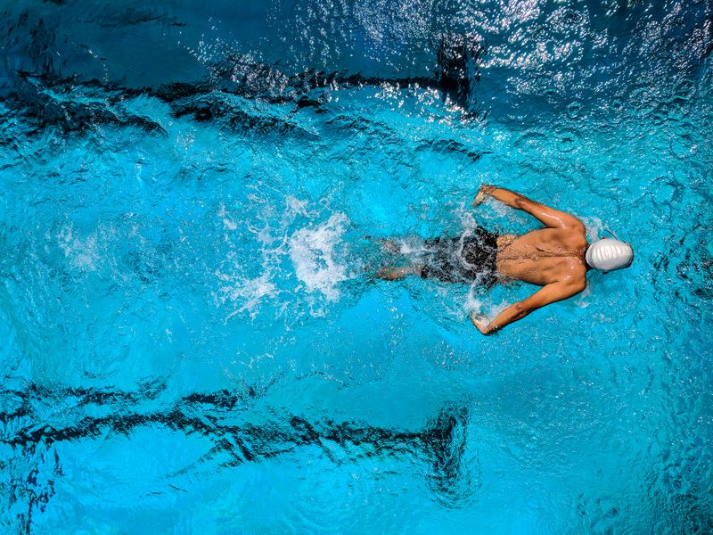
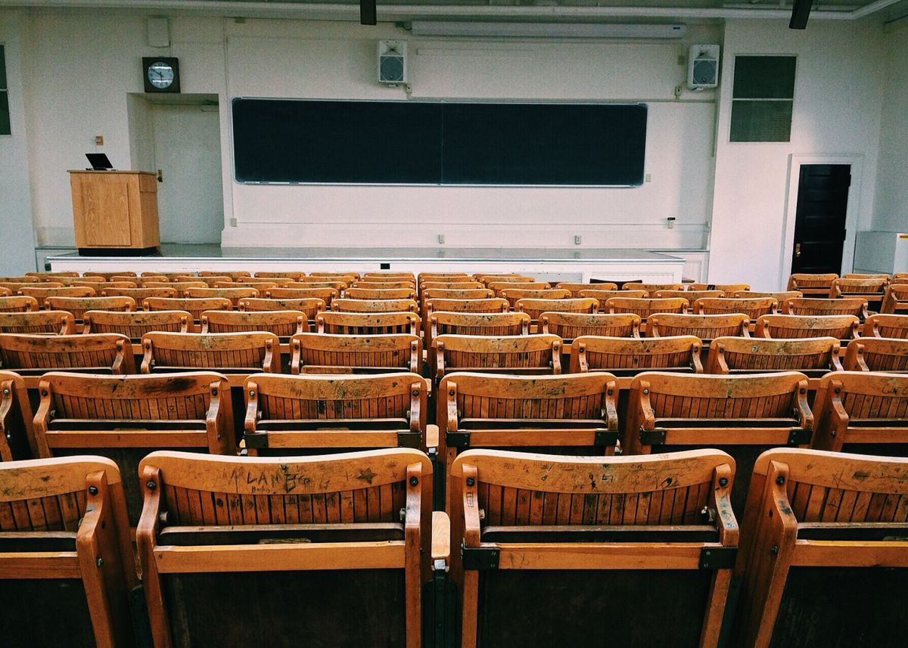

Pengembangan Daya
Berpikir Kritis Dimulai di Sini.
Memadukan pendidikan budi pekerti berlandaskan Di Zi Gui, penguasaan trilingual sejak dini, kurikulum Pearson Edexcel iPrimary, dan pendekatan STEAM.
Dua Kurikulum yang Berjalan Berdampingan
Murid memenuhi standar kelulusan nasional sekaligus mendapatkan kompetensi internasional.
Pearson Edexcel iPrimary
Kurikulum Pearson Edexcel digunakan pada mata pelajaran English, Science, dan Computing.
trilingual
Pembelajaran berlangsung secara interaktif, dengan penerapan Bahasa Mandarin sebesar 42%.
Kurikulum Nasional
Memastikan standar kompetensi kelulusan dari Kementerian Pendidikan Republik Indonesia.
Critical Thinking (ACT)
Pembentukan karakter murid melalui kompetensi Attitude, Communication, dan Thinking.
 Framework Singapura
Framework Singapura
Framework Singapura untuk Matematika
Pembelajaran matematika mengadopsi Framework Singapura dari Dr. Yeap Ban Har, melalui pendekatan Concrete-Pictorial-Abstract (CPA).
Concrete (Konkret)
Murid mengenal konsep matematika melalui benda nyata.
Pictorial (Piktorial)
Murid merepresentasikan konsep melalui gambar atau diagram.
Abstract (Abstrak)
Murid menggunakan simbol dan angka matematika secara abstrak.
Soal Cerita:
Soal Cerita: Andi memiliki 3 kelereng, Budi memiliki 2 kelereng lebih banyak...
Pendekatan STEAM
Proses pembelajaran diarahkan untuk penguasaan kompetensi Critical Thinking, Creativity, Collaboration, dan Communication.
Pendidikan Budi Pekerti merupakan pilar utama pendidikan sekolah.
Pelaksanaan 10 Nilai Moral
Pendidikan Budi Pekerti diintegrasikan ke dalam keseharian, termasuk melatih sikap dapat dipercaya, kedisiplinan hidup, serta ketekunan belajar, sesuai 10 Nilai Moral berdasarkan Di Zi Gui.
Lingkungan Belajar
Fasilitas pendukung dirancang sejalan dengan metode pembelajaran.
Lab Komputer
Pembelajaran literasi digital.

Kolam Renang
Prosedur keamanan air berkala.

Lapangan Olahraga
Pengembangan motorik dan kebugaran.
Ruang Kelas
Menggunakan sirkulasi udara alami.
Pendidikan Berkesinambungan.
Uang Pangkal yang dibayarkan untuk jenjang SD mencakup masa studi murid selama enam tahun hingga lulus dari tingkat Sekolah Dasar.
Kelanjutan studi dijamin hingga akhir jenjang Sekolah Dasar (Kelas 6 SD).
Kelas Adaptasi Mandarin & Psikotes: Program khusus murid SD kelas 1 baru untuk menyetarakan kemampuan bahasa dan psikologis sebelum KBM.
Ketentuan Pendaftaran
Keringanan Biaya Pendidikan
Program Keluarga bagi pendaftar dengan Kartu Keluarga yang sama.
*Syarat & Ketentuan berlaku. Berlaku untuk 20 pendaftar pertama.
Bergabung Bersama Kami
Silakan menghubungi tim admisi kami untuk informasi proses pendaftaran.